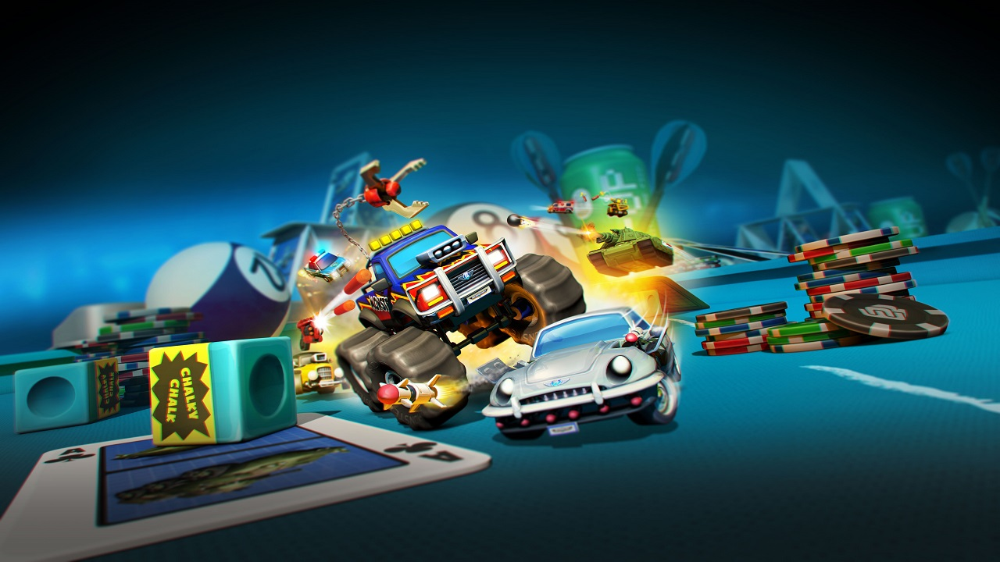
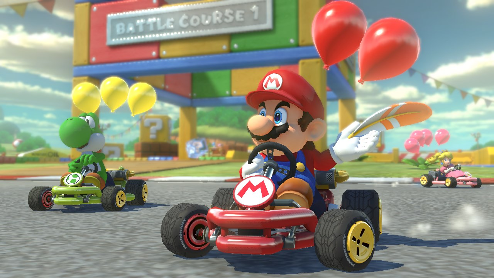
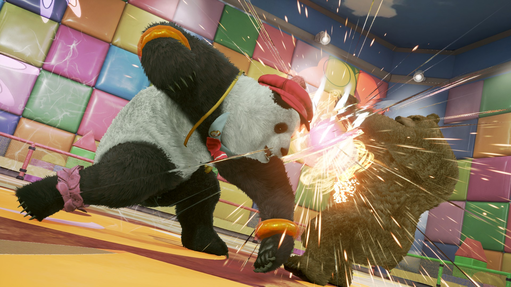
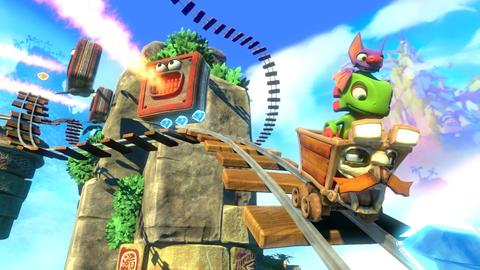

H
O
T
S
T
U
F
F
PREY PS4, Xbox One
The galaxy might look pretty roomy, but
you can't move for alien-infested space
stations up there these days. The latest
is Talos 1, scene of some experiements on
a breed of shape-shifters called Typhons.
Alas, the ship now resembles a Typhon
safari park - and these alien beasts don't
just want your windscreen wipers.
You play as Morgan Yu, a scientist who has been developing a way to harness
You play as Morgan Yu, a scientist who has been developing a way to harness
their special skills. These will give you
a whole range of ways to play the game.
enabling you to hack doors, move heavy
objects and sneak through ventillation
shafts. You'll unlock these skills as you
progress, but at the start you're just a
plain old walking sack of meat.
Fortunately, you also have guns. Our favourite weapon so far is the GLOO Canon, a cross between a flamethrower
Fortunately, you also have guns. Our favourite weapon so far is the GLOO Canon, a cross between a flamethrower
and a fire extinguisher that can be used
to trap enemies, create ramps and cover
up holes in fire-spewing pipes.
But it's the shape-shifting skills that make Prey such a tense experience. With the aliens able to take the form of any object, even the safest-looking room could be crawling with them. It's just as well you can beat them at their own game.
But it's the shape-shifting skills that make Prey such a tense experience. With the aliens able to take the form of any object, even the safest-looking room could be crawling with them. It's just as well you can beat them at their own game.

MICRO MACHINES:
WORLD SERIES
WORLD SERIES
PS4, Xbox One, PC
More than 25 years since its debut on the
NES, Codemasters' top-down tiny racer
returns with 12-player online sprints.
There's also a new battle mode, probably
inspired by Rocket League, with King of
the Hill and Capture the Flag modes.

GTR 3
PS4, Xbox One, PC
Serious petrolheas aren't exactly lacking
for options when it comes to racing sims,
but GTR is the one that started it
all, with physics you just couldn't find on
consoles. GTR 3 will be the first
in the series to grace the PS4 and the Xbox One,
although it won't be arriving until next year.

MARIO KART 8 DELUXE
PS4, Xbox One, PC
It might only be an enhanced version of
the Wii U game that came out in 2014 but
we can't help but get excited about any
new Mario Kart game, especially
when it comes with all the DLC, extra
characters and added options in Battle
Mode. For more on the Switch, turn to p38.


INCOMING
- April
- YOOKA-LAYLEE
- BULLETSTORM: FULL CLIP EDITION
- SNIPER: GHOST WARRIOR 3
- May
- RIME
- June
- TEKKEN 7
- THE ELDER SCROLLS ONLINE: MORROWIND